S19A / 2026.10.10 / r2
人物静态外观已通过，保持上一轮效果。本次集中修订五项设备、地面/工作区和光照；条纹采用地面改色贴图，不添加模型。
本次修订效果 · 待图审 · 未发布
设备图片：左侧修改后 / 右侧上一轮。全场与地面分别注明修改前后，点击图片查看原图。
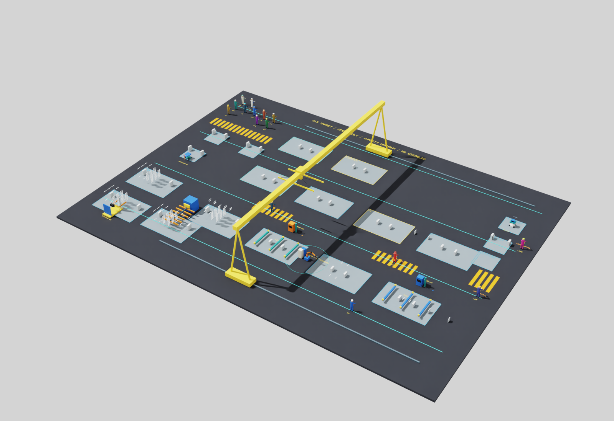
承料滚轮改为橙色，送料支承改深蓝；钢材仍沿用原材质。
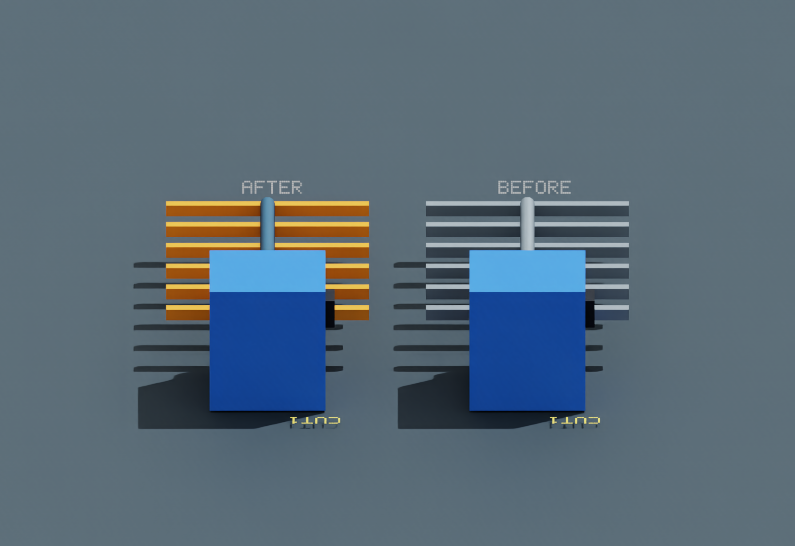
保留橙色机械臂，关节恢复深色、末端杆恢复银色；底座与电源改蓝，控制柜改米白。
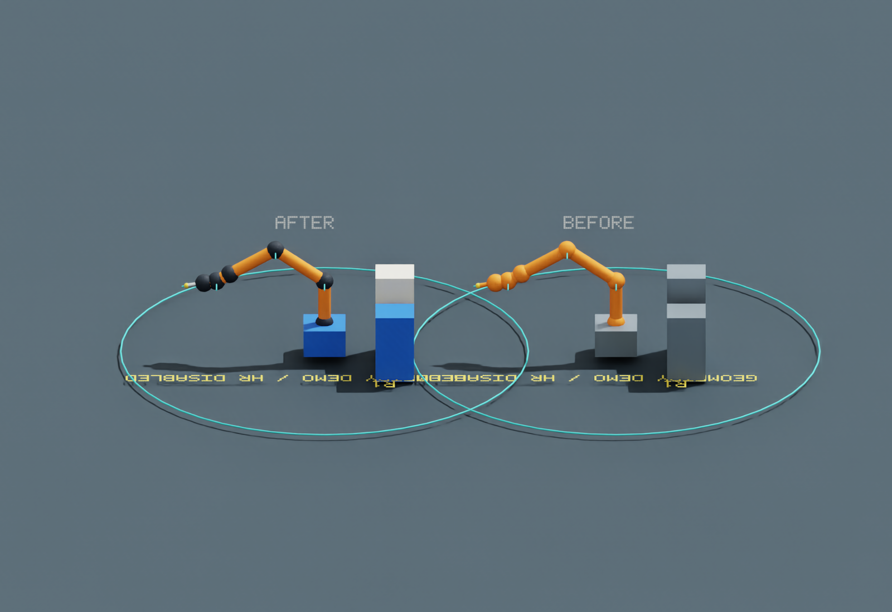
保留黄色底盘，护板改蓝、门架银色、货叉橙色。
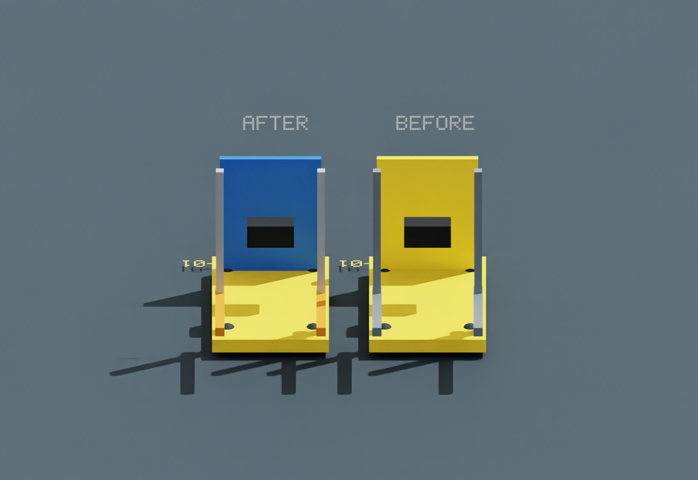
托盘及转接板改蓝色，把手和立柱改橙色，保留青绿底盘与深色车轮。
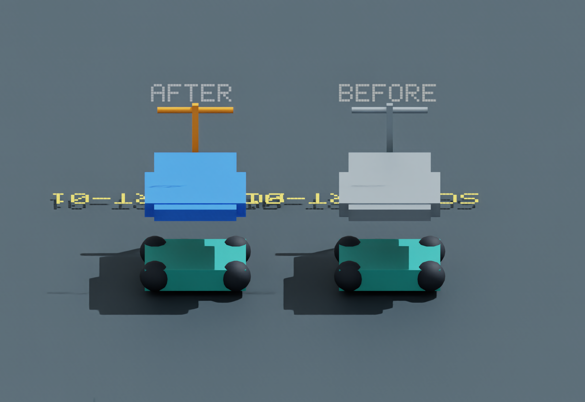
原金属色托盘改为青绿色，保留蓝色仪表和白色底盘。
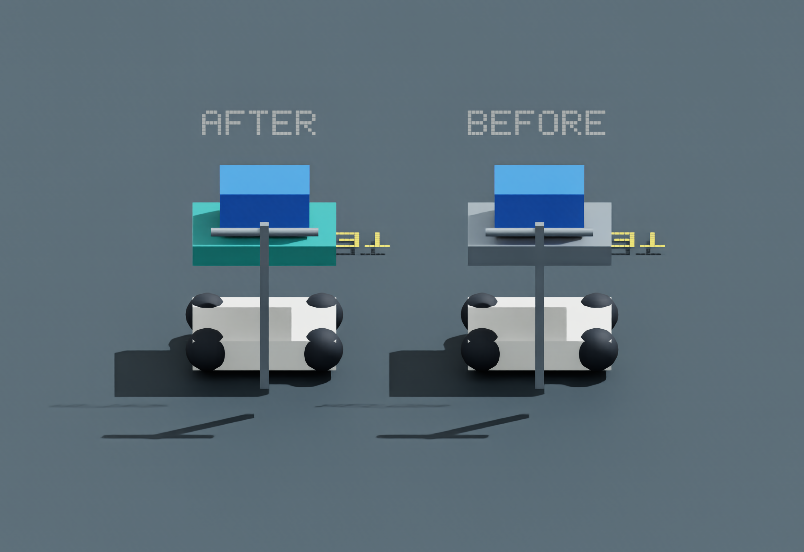
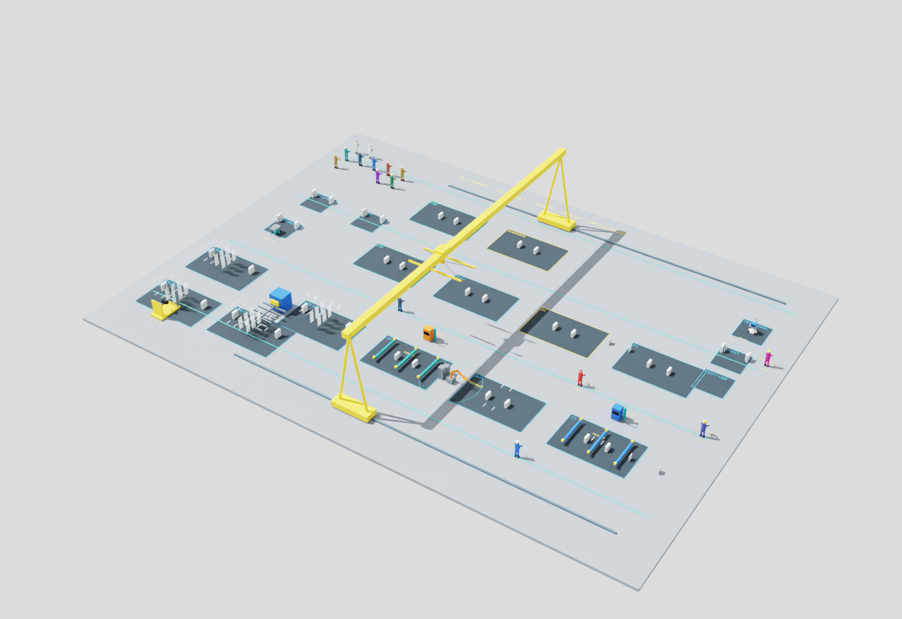
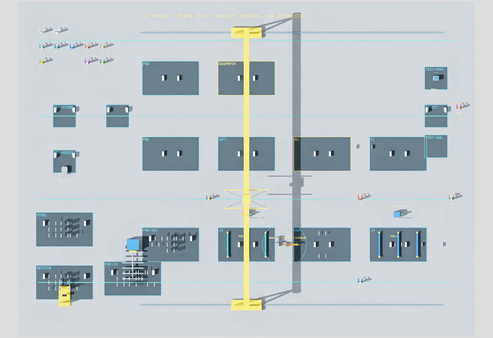
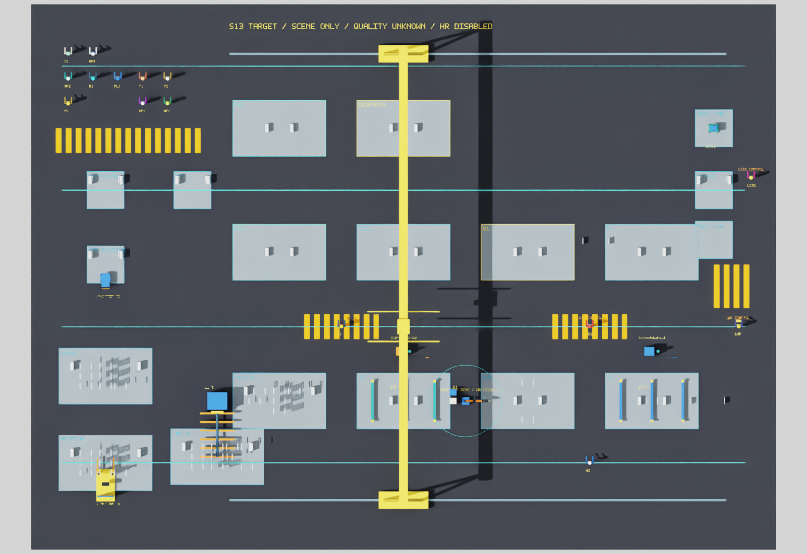
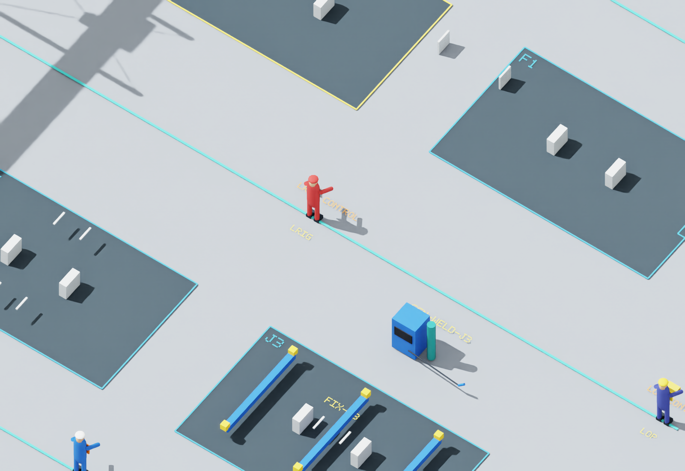
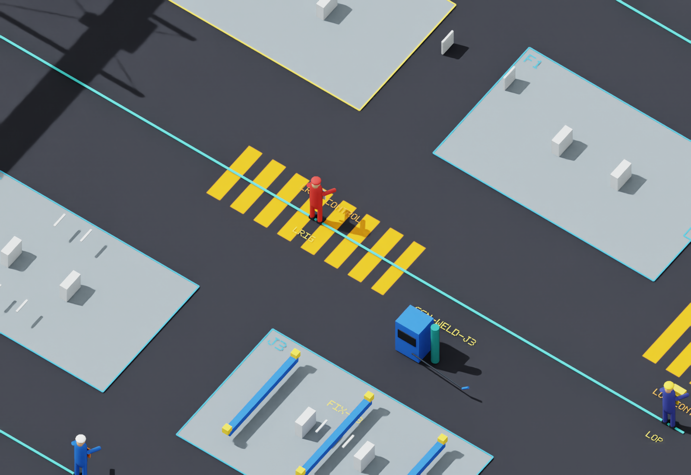
现有1,313几何对象、728碰撞体和15人物属性核验保持。本轮新增几何0；57项回归通过。完整验证说明